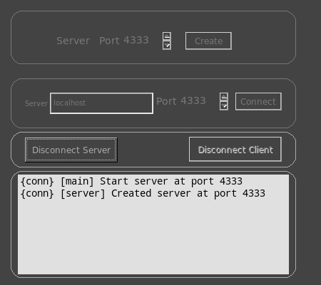

|  |
The connections window allows you to control two or more mrViewers from a single interface, which can be useful for reviewing dailies. |
{conn} [server] Created server at port 4333
And the client will connect with:{conn} [main] Start client at mymachine, port 4333
{conn} [client] Trying 128.92.30.1:4333...
{conn} [client] Connected to 128.92.30.1:4333
The client will check all images and reels from the server and mimic it as best as it can, assuming all paths are visible from both machines. From then on, you will see different {conn} messages every time the two instances of mrViewer acknoledge each other about a change.| Command | Example(s) | Effect |
| Image "imagename" first_frame last_frame | Image "/media/Datos/movies/avengers.mp4" 1 60 | Load an Image/movie into the viewer with the frame range set and at the end of the current reel. |
| FPS double | FPS 23.976 | Change frame rate to all images currently shown. |
| EDL bool | EDL 1 | Change EDL to reel currently shown. |
| Looping int | Looping 1 ( 1 = loop, 2 = swing, 0 = no loop ) | Change looping mode in timeline. |
| Selection x y w h | Selection 20 30 120 240 | Change selection area in image. | Zoom double | Zoom 1.5 | Zooms the view the percentage specified. |
| Offset double double | Offset -320 240 | Offsets the view when not in VR mode. |
| Rotation double double | Rotation 20 50 | Rotates the view when in VR mode. |
| Spin double double | Spin 10 20 | Spins the view when in VR mode. |
| MovePicture double double | MovePicture -10.6 20.5 | Moves the picture an offset. |
| ScalePicture double double | ScalePicture 0.5 0.25 | Scales the picture a percentage. |
| UpdateLayers | UpdateLayers | Updates the layers and color channels |
|
Channel int |
Channel 0 Color | Changes color channel to a new one. |
| FieldDisplay int | FieldDisplay 0 ( 0 = Both, 1 = Top, 2 = Bottom ) | Changes field display shown. |
| Normalize bool | Normalize 0 | Normalizes colors to a gray range (useful for shadow maps). |
| WipeVertical double | WipeVertical 0.2 | Wipes the front image with the background image vertically. |
| WipeHorizontal double | WipeHorizontal 0.2 | Wipes the front image with the background image horizontally. |
| NoWipe | NoWipe | Turns off wiping. |
| OCIO bool | OCIO 1 | Turns on/off OCIO color correction. |
| OCIOConfig "config.ocio" | OCIOConfig "nuke-default/config.ocio" | Selects an ocio configuration file. |
| OCIOView "Display" "View" | OCIOView "default" "sRGB" | Selects a display and a corresponding view. |
| ICS inputcolorspace | ICS sRGB | Selects an input color space for the foreground image. |
| Gain double | Gain 1.0 | Sets the gain for the foreground image. |
| Gamma double | Gamma 2.2 | Sets the gamma for the foreground image. |
| Mask double | Mask 0.2 | Sets the mask for the images. |
| SafeAreas bool | SafeAreas 1 | Toggles safe areas display on and off. |
| DisplayWindow bool | DisplayWindow 1 | Toggles image display window on and off. |
| DataWindow bool | DataWindow 1 | Toggles image data window on and off. |
| Volume double | Voulume 0.75 | Sets the audio volume between 0 (no volume) and 1.0 (full volume). |
| UseLUT bool | UseLUT 1 | Toggles 3D Lut on and off. |
| ShowBG bool | ShowBG 1 | Toggles background image on and off. |
| ShowPixelRatio bool | ShowPixelRatio 1 | Toggles pixel ratio for the image on and off. |
| TimelineMax int | TimelineMax 2232 | Sets the timeline maximum frame. |
| TimelineMaxDisplay int | TimelineMaxDisplay 2232 | Sets the timeline maximum display frame, which should be smaller than timeline maximum frame. |
| TimelineMin int | TimelineMin 1 | Sets the timeline minimum frame. |
| TimelineMinDisplay int | TimelineMinDisplay 32 | Sets the timeline minimum display frame, which should be bigger than timeline minimum frame. |
| VRCubic bool | VRCubic 1 | Toggles VR Cubic display on and off. |
| VRSpherical bool | VRSpherical 1 | Toggles VR spherical display on and off. |
| VRangle double | VRangle 30.0 | Sets the view angle in VR mode. |
| FullScreen | FullScreen | Toggle FullScreen mode. |
| PresentationMode | PresentationMode | Toggle Presentation mode. |
| ShiftAudio "reel" "imagename" offset | ShiftAudio "reel #2" "/media/gga/movies/avatar.mp4" 30 | Shifts audio of a movie file. |
| ShiftMediaStart "reel" "imagename" offset | ShiftMediaStart "reel #2" "/media/gga/movies/avatar.mp4" 30 | Shifts start of a movie file. |
| ShiftMediaEnd "reel" "imagename" offset | ShiftMediaEnd "reel #2" "/media/gga/movies/avatar.mp4" 30 | Shifts end of a movie file. |
| CurrentReel "reel" | CurrentReel "reel #2" | Sets the current reel or creates a new one if the name does not exist. |
| ReplaceImage index "imagename" | ReplaceImage 2 "/media/gga/Datos/pics/file.%04d.exr" | Replaces an image at a certain index with a new image name. |
| RemoveImage index | RemoveImage 2 | Removes an image at the index from the current reel. |
| ClomeImage "imgname" | CloneImage "D:/images/imgseq.%04d.exr" | Clones an image frame from the image from the current reel. |
| InsertImage index "imgname" | InsertImage 1 "D:/images/imgseq.%04d.exr" | Inserts an image at a certain index in the current reel. |
| ChangeImage index | ChangeImage 3 | Changes the image on the current reel starting at 0. In the example, it would display image 4 on the reel. |
| CurrentImage "imgname" first_frame last_frame | CurrentImage "/media/images/test.%02d.pic" 1 30 | Changes the image on the current reel based on image name and start and end frames. |
| ExchangeImage old_index new_index | ExchangeImage 2 0 | Exchanges the image on the old index with the image in the new index. |
| FGReel index | FGReel 2 | Sets the reel index for the foreground image. |
| BGReel index | BGReel 2 | Sets the reel index for the background image. |
| CurrentBGImage "imgname" first_frame last_frame | CurrentBGImage "/media/images/test.%02d.pic" 1 30 | Changes the BG image on the current reel based on image name and start and end frames. |
| sync_image | sync_image | Forces a syncing of all images and reels. |
| stop | stop | Stops playback. |
| playfwd | playfwd | Plays forward. |
| playback | playback | Plays backward. |
| seek int | seek 112 | Seeks to a certain frame. |
| StereoInput int | StereoInput 0 | Sets stereo input. ( 0: no input, 1 = separate layers/images, 2 = top/bottom image, 4 = left/right image ) |
| StereoOutput int | StereoOutput 5 |
Sets stereo output. ( 0: no stereo, 1 = stereo left, 2 = stereo right, 4 = stereo OpenGL, 8 = stereo bottom/top, 10 = stereo top/bottom, 16 = stereo side by side, 18 = stereo crossed, 32 = stereo interlaced, 96 = stereo interlaced columns, 160 = stereo checkerboard, 256 = stereo anaglyph, 258 = stereo right anaglyph ) |
| Windows | ||
| MediaInfoWindow bool | MediaInfoWindow 1 | Toggles Media Information Window. |
| ColorInfoWindow bool | ColorInfoWindow 1 | Toggles Color Area Information Window. |
| GL3dView bool | GL3dView 1 | Toggles 3D View window for deep images. |
| StereoOptions bool | StereoOptions 1 | Toggles 3D Stereo Options Window. |
| PaintTools bool | PaintTools 1 | Toggles Paint/Action Tools Window. |
| HistogramWindow bool | HistogramWindow 1 | Toggles Histogram Window. |
| VectorscopeWindow bool | VectorscopeWindow 1 | Toggles Vectorscope Window. |
| WaveformWindow bool | WaveformWindow 1 | Toggles Waveform Window. |